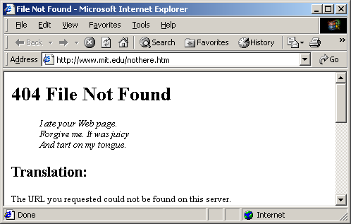

SW Principles 2: Partial information is tolerated
The current Web is unbounded.
Sacrifices link integrity for scalability.
The Semantic Web it unbounded.
Anyone can say anything about anything.
There will always be more to discover.

Jos De Roo
8 of 21